Сегодня сложный день - подъем на самый высокий перевал нашего похода Taglang La 5328. Со стоянки в 3700 метров это заняло целый день. 55 километров непрерывного подъема. У всех сильная горняшка, у Саши в добавок отвалились колени.
Поднимаемся медленно, часто останавливаемся или спешиваемся. С одной стороны понимаешь, что надо быстрее подняться и спуститься пониже для ночевки, а с другой стороны не получается. Не хватает дыхания.
Действительно высокий перевал, вокруг горы либо ниже, либо такие же по высоте.
Спуск в сумерках до 4600 м, установка палатки в темноте за кучами дорожного щебня, холодная ночевка. Пробег сегодня скромный.
Computer (Length/Duration/Average Speed): 73/8.08/9
GPS (Length/Vertical Up/Vertical Down): 66.2/1826/758
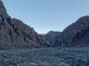 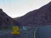 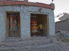 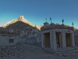 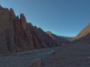  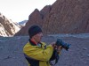 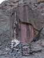 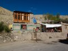 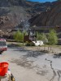 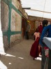 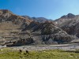 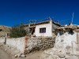 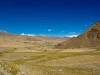 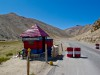 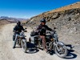 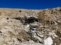 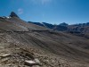 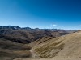 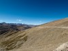 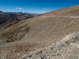 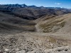 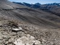 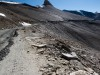 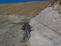
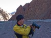 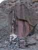 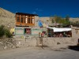 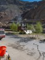 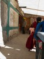 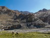 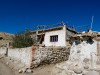 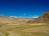 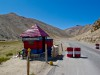 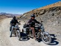 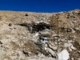 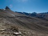 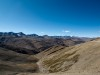 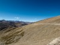 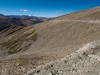 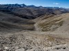 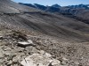 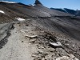 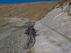